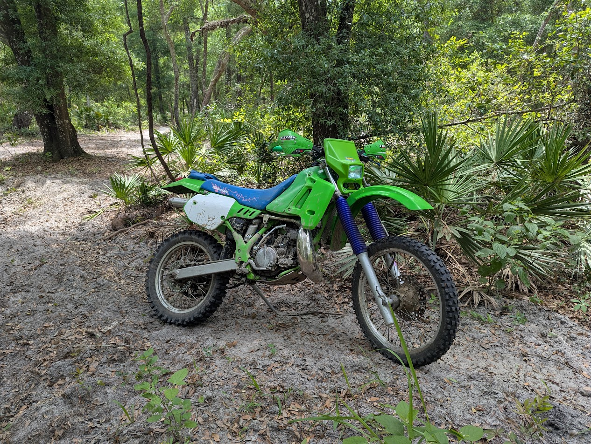

// ROOT_DIRECTORY: 3RD_YEAR_CYBER_SECURITY_STUDENT // PROJECT: 1992 E-SERIES KDX
Thanks for visiting! This is my little corner here where I leave updates about my current projects and such. I am currently working on my bachelors in Cyber Security, and would like to leave updates with that here as well, and any other real hobbies I have like 3D printing and just my typical electronic shenanigans.
Current status: All up and running, just regular maintenance and upkeep. I am working on getting the build sheet and such up to date here. Otherwise it is all on KDXRIDER.net.

// Reference of my 1992 E Series KDX.